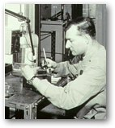

| |
After
World War II the British Museum began to expand its scientific staff
and, among others, Robert
Organ was recruited as a conservation
scientist in 1951, being replaced by Andrew Oddy in 1966.
Meanwhile,
Harold Plenderleith had retired from the British Museum in 1959 to become
the first director of ICCROM in Rome. He was awarded the gold medal
of the Society of Antiquaries in 1964, a UNESCO bronze medal in 1971,
and an ICOM silver medal in 1996.
Alongside
the scientific work in the Research Laboratory, the curatorial departments
continued to employ a number of craftsmen `restorers'. Before World
War II, some of those recruited had been trained as locksmiths or jewellers,
and this tradition continued until the late 1950s when conservators
were first able to undertake a full-time course, at London University's
Institute of Archaeology. During the past 30 years, the number of specialist
conservation courses has increased so that most British Museum conservators
are now fully qualified when recruited. Needless to say, however, conservators
receive a considerable amount of further training during their early
years in the Museum.
4 of 5
|
|

Robert
Organ
|
|
|
|